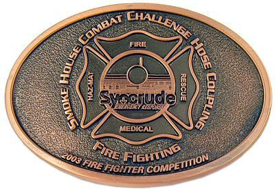
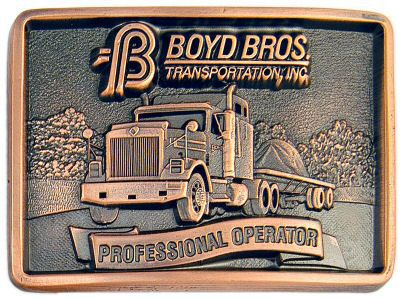
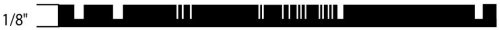
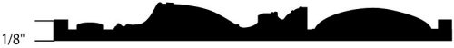
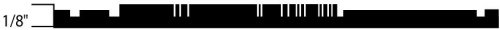
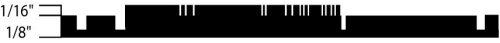

What is the difference between 2 Level and 3D?
- "2 Level" - a design with raised 'flat' surfaces - straight up and down in depth
- "3 Dimensional" - a design with raised 'sculpted and rounded' surfaces - possibly multiple depths
2 Level:
- 2 level is by far the most 'economical' and common type of belt buckle that we make today.
- When we refer to a buckle as being 2 level, we mean that there are only 2 heights of surfaces - the raised flat surface in the foreground, and the lower surface in the background.
- The raised areas have flat surfaces that are polished during production - with straight edges rising at right angle to the background.
- The recessed area, or background, is normally textured with a darkened finish (antiquing), or color-filled to suit clients needs.
- This combination of polished raised surfaces and darkened or colored background guarantees maximum contrast for your design.
- The ‘overall thickness’ of this standard 2 level format is approximately 1/8”.
- When looking at any of the artwork on our website, or when you receive the artwork file from us, the white area will be recessed, and the black areas will be raised metal - all of which will have flat surfaces.
- 2 level buckles have a lower cost to manufacture and can typically be produced in a shorter amount of time.
Sample 2 Level Buckle
3 Dimensional = Sculpted Heights:
- This process yields our “most prestigious” finished piece.
- It incorporates slopes and curvature on many levels to provide a truly unique piece that takes full advantage of your logo/image design.
- Instead of the raised surface being straight up and down – all surfaces and profiles can be rounded and sculptured to maximize the realistic effect.
- For instance:
- If your design incorporated a soccer ball or baseball – you could design the ball coming out of the background and rising up as a curved dome, just like a real ball!
- Into this ball, fine detail can then be added to give a truly realistic look to it.
- The dimples and lines on a basketball, or the stitches on a baseball, are just two examples of how you can give your design a real ‘lifelike’ appearance.
- This is an ideal format for a very special occasion or event – should your budget allow it.
- 3D is more expensive - however, if you order quite a few pieces, the additional cost per buckle can seem minimal
- All quotes are confirmed upon presentation of your design and specifications
Sample 3 Dimensional Buckle
Multi-depth - Sub-Surface/ Sub Level:
- Exactly the same as our ‘Standard’ 2 Level format, with the “added benefit” of a third level “in-between” the top of the raised level and the recessed background.
- This middle level is typically about half the height of the full raised surface.
- With this third (lower) level, you can add some dimensionality to simulate the ‘look’ of 3-Dimensional in some designs for a nominal fee.
- The ‘overall thickness’ of this sub-surface format remains at 1/8” – with the third (lower) level below the overall surface level.
Multi-level - Elevated-Surface/Level:
- This design format starts with the same features as our ‘Standard’ 2 Level format, also with an “added benefit”.
- Except this time we “add an additional level stacked on top” of the raised flat surface of a 2 Level.
- With this added level rising above the standard height of the piece, you are able to highlight certain elements of your design – again giving the piece the ‘look’ of a 3-Dimensional design – for a fraction of the cost.
- The piece thickness increases with this feature by approximately 1/16” over the standard 1/8” (per added level).
- Multiple additional levels are possible depending on design and your budget.
Side Profile Cross-Sections
Cross-section of 2 Level
Cross-section of 3D (Sculpted)
Cross-section of Multi-depth
Cross-section of Multi-level